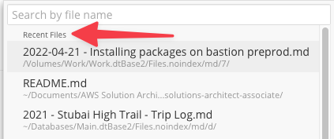
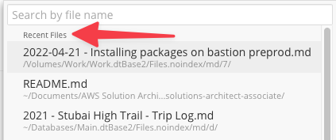

Hi,
I’m wondering, is there any built-in feature / action which can show last recent X notes opened?
Used that heavily with my previous notes app and haven’t found how to do that with Drafts.

Any ideas?
Hi,
I’m wondering, is there any built-in feature / action which can show last recent X notes opened?
Used that heavily with my previous notes app and haven’t found how to do that with Drafts.

Any ideas?
In the user interface you can navigate to recent Drafts.
In scripting you can access the content of this same list with editor.recentDrafts().
Hope that helps.
Thanks!
I’ve missed that.